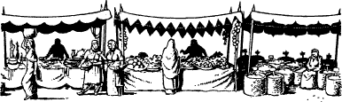

22
‘Thanks … for nothing,’ you say, as you walk out of the warehouse and return to the square. As you are looking around and wondering where next to go, you suddenly notice that there is something happening at the end of a street that leads away from the quayside. You decide to investigate and you soon discover that the street leads to a large courtyard. Here the women of Masama are selling their wares, spread out upon gaily-decorated market stalls. Unlike at the warehouses and emporia at the quayside, the people who attend this market all appear to be natives of the city. As you pass by one stall you overhear two women talking about a place called Kitaezi. One of them is insisting that the whole city has been placed under a curse. You are about to turn back and ask her more about this city when suddenly you are approached by a tall woman who is swathed from head to toe in a fine blue robe. Anxiously she asks if you are a healer, and her piercing grey eyes continually dart to the satchel slung over your shoulder. It is as if she knows that you are carrying the Moonstone.
{kind=link}

Your Kai Sixth Sense tells you that she means you no harm. You sense that she is greatly troubled, and when you ask what is wrong, she says that her daughter, Harni, is gravely ill. She pleads with you to come and help her, and although you deny that you are a healer, you feel compelled to answer her desperate plea for help.